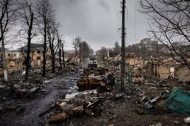

俄乌冲突概述
俄乌冲突是21世纪欧洲最严重的军事对抗，始于2022年2月24日俄罗斯对乌克兰发起的全面入侵。这场被俄罗斯称为"特别军事行动"的冲突实际上是欧洲自二战以来最大规模的军事行动。
冲突的根源可追溯至乌克兰与俄罗斯之间长期存在的地缘政治紧张关系，特别是乌克兰寻求加入欧盟和北约的意愿，以及2014年克里米亚被俄罗斯吞并后的紧张局势。
战争已造成数万人死亡，数百万人流离失所，同时引发全球性的经济冲击，尤其是能源和粮食危机。国际社会对此反应不一，西方国家普遍支持乌克兰，对俄罗斯实施制裁；而其他一些国家则保持中立或支持俄罗斯。
这场战争的持续不仅对直接参与方产生深远影响，也重塑了国际关系格局，挑战了战后建立的国际秩序与安全体系。